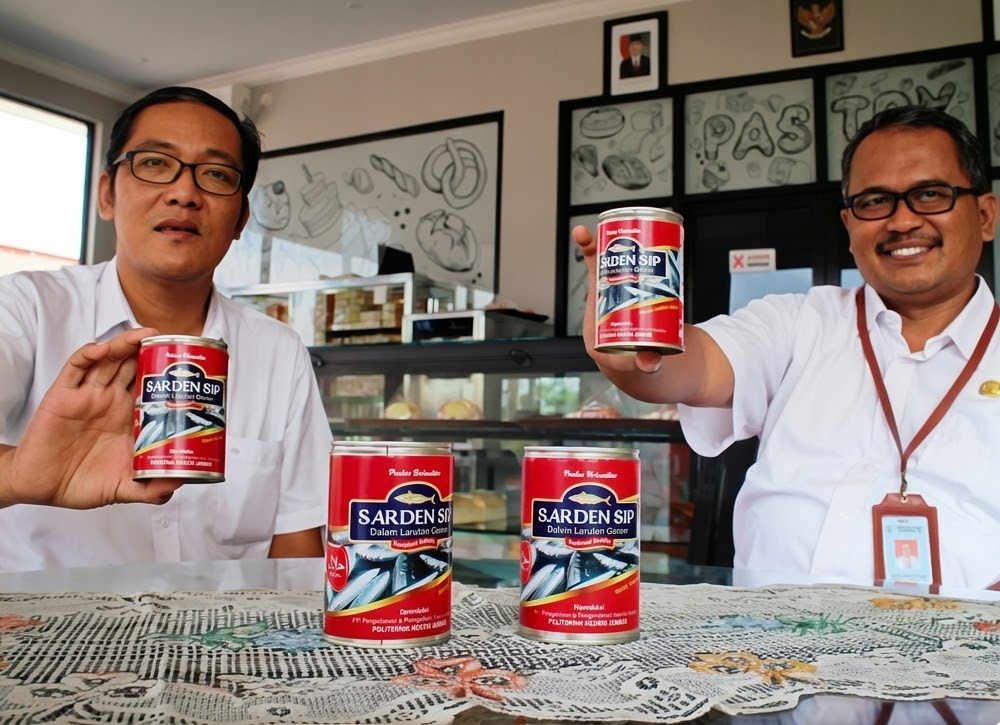
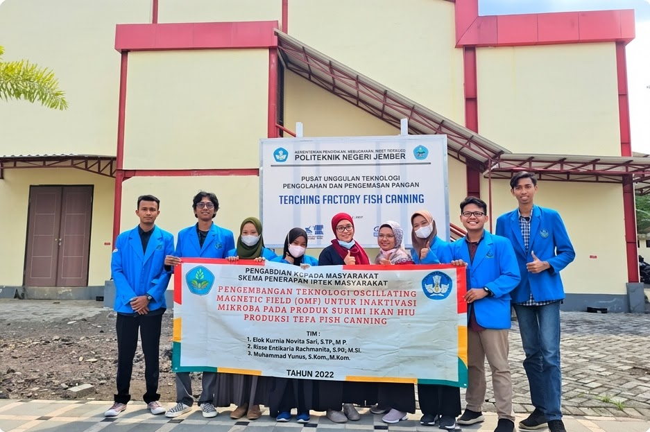

Instansi atau kelompok
Kategori pengunjung dan ketentuan rombongan perlu dikonfirmasi kepada pengelola.
Teaching Factory (Tefa) adalah konsep pengajaran berbasis standar industri dalam lingkungan nyata. Di Politeknik Negeri Jember (Polije), terdapat Tefa Canning yang memproduksi pangan kaleng, salah satunya ikan sarden.
Masuk ↗Mahasiswa belajar langsung di lingkungan produksi berstandar industri.
Teaching Factory Canning memadukan kegiatan belajar, produksi, dan penelitian dalam satu unit di Politeknik Negeri Jember, sehingga mahasiswa terbiasa dengan alur kerja industri sesungguhnya.

Jadwalkan edu wisata untuk melihat proses produksi sarden kaleng.
Setiap peran saling bersinergi dalam pembelajaran, produksi, serta pengembangan produk Tefa Canning Polije.


Jelajahi proses pengolahan hasil perikanan bersama TEFA Canning Polije. Kenali perjalanan bahan baku hingga menjadi produk dalam kaleng melalui pengalaman belajar langsung di lingkungan produksi nyata.
Lihat jadwal kunjungan ↗
Kategori pengunjung dan ketentuan rombongan perlu dikonfirmasi kepada pengelola.
Hubungi pengelola untuk membahas tanggal dan waktu kunjungan yang diinginkan.
Ketentuan pakaian, atribut, dan kebersihan area produksi perlu dikonfirmasi sebelum berkunjung.
Tujuan kunjungan dan jumlah peserta dapat disampaikan saat menghubungi pengelola.
Alur edukasi kunjungan
Mengenal Teaching Factory dan penerapan pembelajaran industri di Politeknik Negeri Jember.
Mengamati penyiapan bahan, pengolahan, dan pengalengan secara langsung di area produksi.
Memahami standar kebersihan, pengujian, dan pemeriksaan kualitas produk kaleng.
Tanya jawab dan refleksi bersama pendamping kunjungan mengenai proses yang diamati.
Kalender ini membantu memilih tanggal. Ketersediaan aktual dan jadwal akhir dikonfirmasi pengelola setelah pengajuan diterima.
Tanggal lampau tidak dapat dipilih. Tanggal pilihan masih menunggu konfirmasi pengelola.
TEFA Canning Polije membuka ruang kerja sama untuk menghubungkan pendidikan, pengolahan perikanan, dan kebutuhan mitra. Mari temukan bentuk kolaborasi yang dapat tumbuh bersama.
Diskusikan kemitraan ↗Solusi yang dikembangkan bersama
Diskusi potensi bahan baku dan kebutuhan pengolahan produk.
Eksplorasi gagasan produk dan proses melalui pembelajaran terapan.
Kolaborasi pengenalan proses industri dan peningkatan keterampilan.
Rancangan informasi profil calon mitra. Dokumen pendukung dapat dibahas bersama pengelola.
Gambaran kebutuhan dan tujuan kerja sama untuk bahan diskusi dengan pengelola.
Pembahasan kesepakatan, prosedur, dan dokumen resmi bersama pengelola.
Jelajahi jejaring berdasarkan tahun dan urutkan nama mitra.
Data mitra pada tampilan ini masih berupa contoh. Ganti dengan nama dan informasi mitra resmi Tefa Canning Polije.

Sampaikan profil instansi, kebutuhan, serta gambaran kerja sama. Tim pengelola akan menindaklanjuti permohonan Anda.
Hubungi pengelola ↗Sampaikan pertanyaan atau rencana kerja sama Anda. Tim pengelola TEFA Canning Polije siap membantu koordinasi selanjutnya.
Sampaikan pertanyaan atau permintaan kerja sama. Tim pengelola TEFA Canning Polije siap menindaklanjuti.
Gunakan formulir terpadu untuk mengirim rencana kunjungan, kemitraan produk, atau pertanyaan lainnya.
Buka formulir ↗